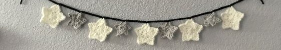

Amigurumis :D
Esta página tiene instrucciones sobre como tejer algunos amigurumis. Los patrones no son míos, pero si fueron comprados. Se toma en cuenta que esta página es solo para una tarea y se confía plenamente en no reproducirlos de ninguna manera. Se puede hacer clic en cualquier imagen y/o nombre del proyecto para ver las instrucciones.